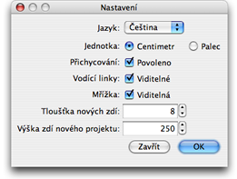

Nastavení propgramu Sweet Home 3D zmìníte v menu Sweet Home 3D > Nastavení... v prostøedí Mac OS X nebo jiných systémech Soubor > Nastavení....

V nabídce nastavení mù¾ete mìnit Jazyk prostøedí programu Sweet Home 3D, Mìrnou jednotku u¾ívanou v pravítku plánu, møí¾ce a v¹ech dal¹ích rozmìrech.
Za¹krtávací políèko Magnetismus povioluje èi zakazuje u¾ívání magnetismu v plánu projektu pøi kreslení zdí
a umístìní nábytku.
Za¹krtávací políèko Pravítko povoluje èi zakazuje zobrazení pravítka v plánu projektu.
Za¹krtávací políèko Møí¾ka povoluje èi zakazuje zobrazení pomocné møí¾ky v plánu proejktu.
V nastavení Tlou¹»ka nové zdi se nastavuje síla/tlou¹»ka v¹ech zdí, které budou vytvoøeny od doby nastavení.
V nastavení Vý¹ka nové zdi se nastavuje vý¹ka novì vytvoøených zdí, které budou vytvoøeny od doby nastavení.
|